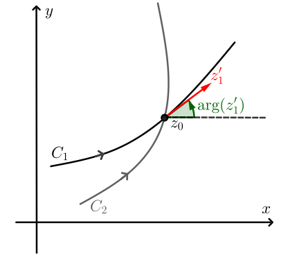
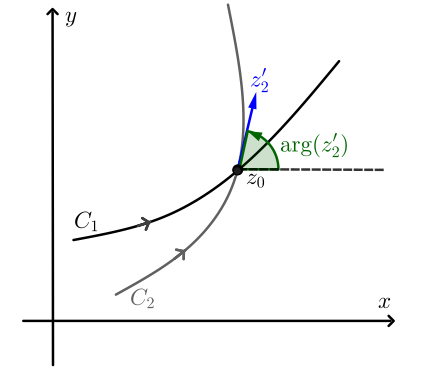
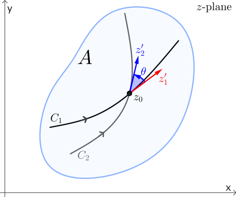
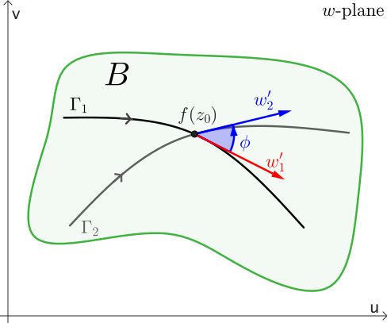
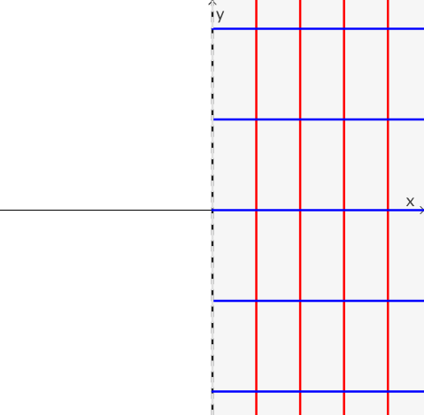
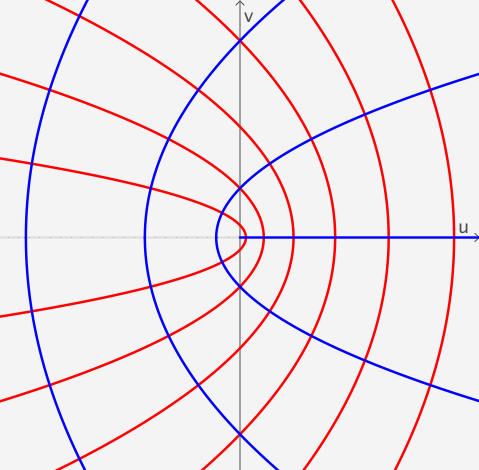
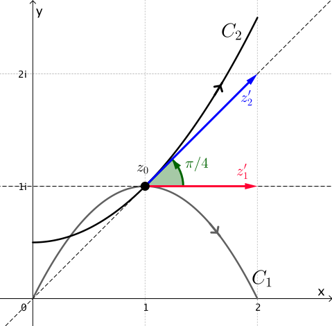
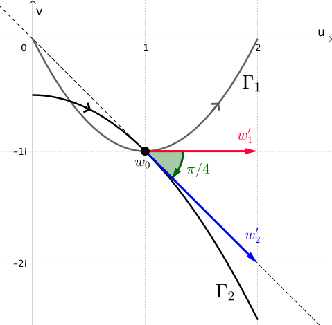

Conformal Mapping
Let $w=f(z)$ be a complex mapping defined in a domain $A$. Consider two smooth curves $C_1$ and $C_2$ in $A$ that intersect at $z_0$ and have a fixed orientation. Let $z_1(t)$ and $z_2(t)$ be parametrizations of $C_1$ and $C_2$ such that $z_1(t_0) = z_2(t_0) = z_0$, and such that the orientations on $C_1$ and $C_2$ correspond to the increasing values of the parameter $t.$ Since $C_1$ and $C_2$ are smooth, the tangent vectors $z_1' = z_1'(t_0)$ and $z_2' = z_2'(t_0)$ are both nonzero. Then, $\text{arg}\left(z_1'\right)$ and $\text{arg}\left(z_2'\right)$ represent the angles between the position vectors of $z_1'$ and $z_2'$, respectively, and the positive \( x \)-axis.
Remark 1: Here we will consider one single value of $\text{arg}\left(z\right).$ For more details see The Principal Argument.
|  |  |
We define the angle $\theta$ between $C_1$ and $C_2$ at $z_0$ is as the value of \begin{eqnarray}\label{theta-angle} \text{arg}\left(z_2'\right)-\text{arg}\left(z_1'\right) \end{eqnarray} in the interval $[0,\pi],$ provided that we can rotate $z_1'$ counterclockwise about $z_0$ through the angle $\theta$ onto $z_2'.$ In the case that a clockwise rotation is needed, then $-\theta$ is the value of (\ref{theta-angle}) in the interval $(-\pi, 0).$ In either case, we see that (\ref{theta-angle}) gives both the magnitude and sense of the angle between $C_1$ and $C_2$ at $z_0.$
Now suppose that under the mapping $w = f(z)$ the curves $C_1$ and $C_2$ in the $z$-plane are mapped onto the curves $\Gamma_1$ and $\Gamma_2$ in the $w$-plane, respectively. Because $C_1$ and $C_2$ intersect at $z_0$, we must have that $\Gamma_1$ and $\Gamma_2$ intersect at $f(z_0)$. If $\Gamma_1$ and $\Gamma_2$ are smooth, then the angle between $\Gamma_1$ and $\Gamma_2$ at $f(z_0)$ is similarly defined to be the angle $\phi\in [0,\pi]$ between similarly defined tangent vectors $w_1'$ and $w_2'.$ We say that the angles $\theta$ and $\phi$ are equal in magnitude if $\theta=\phi.$
|  |  |
In the $z$-plane, the vector $z_1',$ whose initial point is $z_0,$ can be rotated through the angle $\theta$ onto the vector $z_2'.$ Of course, this rotation in the $z$-plane can be either in the counterclockwise or the clockwise direction.
Similarly, in the $w$-plane, the vector $w_1'$ whose initial point is $f(z_0),$ can be rotated in either the counterclockwise or clockwise direction through an angle of $\phi$ onto the vector $w_2'.$ If the rotation in the $z$-plane is the same direction as the rotation in the $w$-plane, we say that the angles $\theta$ and $\phi$ are equal in sense.
Now that we have established the terminology regarding the magnitude and sense of an angle, we are now in a position to introduce the concept of conformal mapping. We say that the mapping $w=f(z)$ is conformal at a point $z_0$ in $A$ if for every pair of smooth oriented curves $C_1$ and $C_2$ in $A$, intersecting at $z_0$, the angle between $C_1$ and $C_2$ at $z_0$ is equal to the angle between the image curves $\Gamma_1$ and $\Gamma_2$ at $f(z_0)$ in both magnitude and sense.
We will also use the term conformal mapping to refer to a complex mapping $w = f(z)$ that is conformal at $z_0.$ In addition, if $w = f(z)$ maps a domain $A$ onto a domain $B$ and if $w=f(z)$ is conformal at every point in $A,$ then we call $w = f(z)$ a conformal mapping of $A$ onto $B.$
Analytics functions
A remarkable geometrical property enjoyed by all complex analytic functions is that, at non-critical points, they preserve angles, and therefore define conformal mappings.
We wish to prove that the angle $\theta$ between $C_1$ and $C_2$ at $z_0$ is equal to the angle $\phi$ between $\Gamma_1$ and $\Gamma_2$ at $f(z_0)$ in both magnitude and sense.
We may assume, by renumbering $C_1$ and $C_2$ if necessary, that $z_1'=z_1'(t_0)$ can be rotated counterclockwise about $z_0$ through the angle $\theta$ onto $z_2'=z_2'(t_0).$ Then, using (\ref{theta-angle}), we know that \[ \theta = \text{arg}\left(z_2'\right)-\text{arg}\left(z_1'\right) \] in the interval $[0,\pi].$
Using the chain rule we have that \begin{eqnarray*} w_1' = w_1'(t_0)= f'\left(z_1\left(t_0\right)\right)\cdot z_1'\left(t_0\right)= f'\left(z_0\right)\cdot z_1' \end{eqnarray*} and \begin{eqnarray*} w_2' = w_2'(t_0)= f'\left(z_2\left(t_0\right)\right)\cdot z_2'\left(t_0\right)= f'\left(z_0\right)\cdot z_2'. \end{eqnarray*}
Since $C_1$ and $C_2$ are smooth, both $z_1'$ and $z_2'$ are nonzero. Moreover, we have that $f'\left(z_0\right)\neq 0,$ and thus, both $w_1'$ and $w_2'$ are nonzero. Now, the angle $\phi$ between $\Gamma_1$ and $\Gamma_2$ at $f(z_0)$ is a value of
Remark 2: The previous theorem establishes that a mapping is conformal at $z_0$ if $f$ is analytic there and $f'(z_0)\neq 0.$ Such transformation is actually conformal at each point in some neighborhood of $z_0.$ This is because it must be analytic in a neighborhood of $z_0$; and since its derivative $f'$ is continuous in that neighborhood, there is also a neighborhood of $z_0$ throughout which $f'(z_0)\neq 0.$
Examples
Now, with the help of Theorem 1, it is relatively easy to determine where an analytic function is a conformal mapping.
Example 1: The mapping $w = e^z$ is conformal throughout the entire $z$ plane since $(e^z)'= e^z \neq 0$ for each $z$. Consider any two lines $x = c_1$ and $y = c_2$ in the $z$ plane, the first with upward direction and the second directed to the right. The images under the mapping $w = e^z$ are a positively oriented circle centred at the origin and a ray from the origin, respectively. As illustrated in Figure 7, the angle between the lines at their point of intersection is a right angle in the negative direction, and the same is true of the angle between the circle and the ray at the corresponding point in the $w$ plane.
Example 2: The entire function $f(z)=z^2$ is not conformal at $z_0=0.$ The explanation is, of course, that $z_0=0$ is a critical point of $f$, that is $f'(0)=0.$ Amazingly, the map preserves angles everywhere else. For example, consider the right half-plane $\{\textbf{Re}(z)>0\}.$ This region is mapped conformally by $w=z^2$ onto the slit plane $\mathbb C \setminus (-\infty,0],$ as illustrated in Figure 8. Can you think of another region where $w=z^2$ is conformal?
|  |  |
A mapping that preserves the magnitude of the angle between two smooth curves but not necessarily the sense is called an isogonal mapping.
Example 3: The mapping $w = \conj{z}$ is a reflection in the real axis. This mapping is isogonal but not conformal.
Consider for example the curves $C_1$ and $C_2$ given by
|  |  |
The image curves are parametrized by
The angle between $\Gamma_1$ and $\Gamma_2$ at $w_0$ is $\phi=\pi/4.$ Thus, the angles $\theta$ and $\phi$ are equal in maginitude. However, because the rotation through $\pi/4$ of the vector $z_1'$ onto $z_2'$ must be counterclockwise, whereas the rotation through $\pi/4$ of $w_1'$ onto $w_2'$ must be clockwise, we conclude that $\theta$ and $\phi$ are not equal in sense.
Therefore, $w=\conj{z}$ is not conformal.
In the applet below you can explore the effect of some mappings over a region. In particular, the applet starts with a squared defined as $S=[-0.5,0.5]\times[-0.5,-1.5].$ First, select a mapping and observe how the region $S$ is transformed. Then, modify this region by dragging the corner points of the square. What do you notice? What do you wonder?
Local inverses
A transformation $w = f (z)$ that is conformal at a point $z_0$ has a local inverse there. That is, if $w_0 = f (z_0),$ then there exists a unique transformation $z = f^{-1}(w),$ which is defined and analytic in a neighborhood $V$ of $w_0,$ such that $f^{-1}(w_0) = z_0.$ Furthermore, $f^{-1}(w)$ is differentiable in $V$ and \[ \frac{d}{dw}f^{-1}(w) = \frac{1}{f'(z)}. \]
The existence of such an inverse can be verified using the Inverse Function Theorem from real analysis in two dimensions:
If $w = f (z)$ is conformal at $z_0 = x_0+iy_0,$ there is some neighborhood $U$ of $z_0$ throughout which $f$ is analytic. For $z=x+iy,$ if we write \begin{eqnarray}\label{trans01} f(z) = u(x,y)+ iv(x,y), \end{eqnarray} we know that there is a neighborhood of the point $(x_0,y_0)$ throughout which the functions $u(x,y)$ and $v(x,y),$ along with their partial derivatives of all orders, are continuous (a new section about this fact will be available soon).
The function defined in (\ref{trans01}) represents a transformation from the neighborhood $U$ into the $uv$ plane. Furthermore, the determinant
which is known as the Jacobian of the transformation $f$, is nonzero at the point $(x_0,y_0).$ It is easy to prove this by considering the Cauchy-Riemann equations \[ u_x = v_y \quad \text{and}\quad u_y = -v_x. \] Then we can write $J_f$ as \[ J_f = \left(u_x\right)^2+\left(v_x\right)^2=\left|f'(z)\right|^2. \] Since $w=f(z)$ is conformal at $z_0,$ then $f'\left(z_0\right)\neq 0,$ and consequently, the Jacobian is nonzero at the point $(x_0,y_0).$
The above continuity conditions on the functions $u(x,y) $ and $v(x,y)$ and their derivatives, together with this condition on the Jacobian nonzero at the point $(x_0,y_0)$, are sufficient to ensure the existence of a local inverse of transformation (\ref{trans01}) at $(x_0,y_0),$ which is established by Theorem 2.
In other words, if $u_0 = u(x_0,y_0)$ and $v_0=v(x_0,y_0),$ then there is a unique continuous transformation \begin{eqnarray}\label{trans02} f^{-1}(w) = x(u,v)+ i y(u,v) \end{eqnarray} defined on a neighborhood $V$ of the point $(u_0,v_0)$ and mapping that point onto $(x_0,y_0),$ such that equation (\ref{trans01}) holds when equation (\ref{trans02}) holds.
In addition to being continuous, the real and imaginary components of the function (\ref{trans02}) have continuous first-order partial derivatives satisfying the equations
throughout $V.$ Since the Cauchy-Riemann equations hold for $u$ and $v,$ they also fold for $x$ and $y,$ that is \[ x_u = y_v \quad \text{and}\quad x_v = - y_u. \] throughout $V.$ Consequently, the function defined in (\ref{trans02}) is differentiable. Furthermore, using the expressions in (\ref{eqls}) and the Cauchy-Riemann equations we have that
Hence, we have just proven the following:
The Inverse Function Theorem states only the existence of a local inverse for $f.$ For example, consider the function $f(z)=z^2$ defined on $A = \C\setminus \{0\}.$ Then $f'(z)= 2z \neq 0 $ for every point of $A.$ The Inverse Function Theorem says that $f$ has a unique local analytic inverse, which is, in fact, some branch of the square root function $f^{-1}=\sqrt{z}.$ However, $f$ is not one-to-one on all $A,$ since $f(1)= f(-1).$ Thus $f$ will be one-to-one only within sufficiently small neighborhoods surrounding each point.
The Riemann Mapping Theorem
In many applications it is common to look for a conformal mapping of a domain $A$ onto a simpler domain $B.$ A natural question to ask is whether such a mapping exists. That is, given domain $A$ and $B$, does there exist a conformal mapping of $A$ onto $B$?
An answer to this question was given by Bernhard Riemann in 1851. Although there was a gap in Riemann's original proof (which was subsequently filled), this amazing theorem still bears his name:
From this result we see that if $A$ and $B$ are any two simply connected domains, with $A\neq \C,$ $B\neq \C,$ then there exists a bijective conformal map $h:A\to B.$ If $f:A\to D$ and $g:B\to D$ are conformal, we can set $h = g^{-1}\circ f$ (see Figure 10). Two domains $A$ and $B$ are called conformally equivalent if there is a bijective conformal map from $A$ to $B.$ Thus the Riemann Mapping Theorem implies that two simple connected domains (unequal to $\C$) are conformally equivalent.
Riemann's theorem is of critical theoretical importance, but its proof is not constructive. This means that the theorem establishes the existence of the mapping $f$ but it does not offer a method to find a formula for $f.$ A proof of the Riemann Mapping Theorem is beyond the scope of this text. The interested reader can refer to the books:
- Complex Analysis by Lars V. Alfors, McGraw-Hill, 1979; and
- Basic Complex Analysis by Jerrold. E. Marsden & Michael J. Hoffman, W. H. Freeman and Company, 1999.